Staff
Instructors¶
Teaching Assistants (GSIs)¶
 Adeel Cheema (bio) Adeel is a 3rd year computer science major and it's his second semester as a uGSI for Data 8. In his spare time, he likes to take pictures and look at cars he can't afford on craigslist. You can check out some of his pictures at acheema.com
acheema@berkeley.edu
Lab: W 2pm-4pm, Cory 105
OH: TBD
|
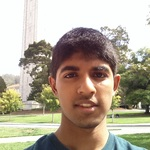
Adith Balamurugan (bio) Adith is a 3rd year majoring in Computer Science and Statistics. He enjoys talking about interesting problems and balling. Hit him up if you want to play some pickup.
abala@berkeley.edu
Lab: W 2pm-4pm, SDH 254
OH: TBD
|
 Adnan Hemani
adnan.h@berkeley.edu
Lab: Th 9am-11am, SDH 254
OH: TBD
|
Akriti Singh (bio) Akriti is a third year computer science major from the Bay Area. She loves trying new restaurants, discovering new music on Spotify, and re-watching old movies. In her free time, she dabbles in product design, calligraphy, painting, and photography. Data 8 was one of her favorite classes at Cal, and she's super excited to teach this semester!
akritisingh@berkeley.edu
Lab: W 2pm-4pm, SDH 254
OH: TBD
|
|
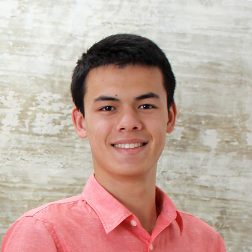
Alan Rosenthal
amrosenthal@berkeley.edu
Lab: Th 11am-1am, SDH 254
OH: TBD
|
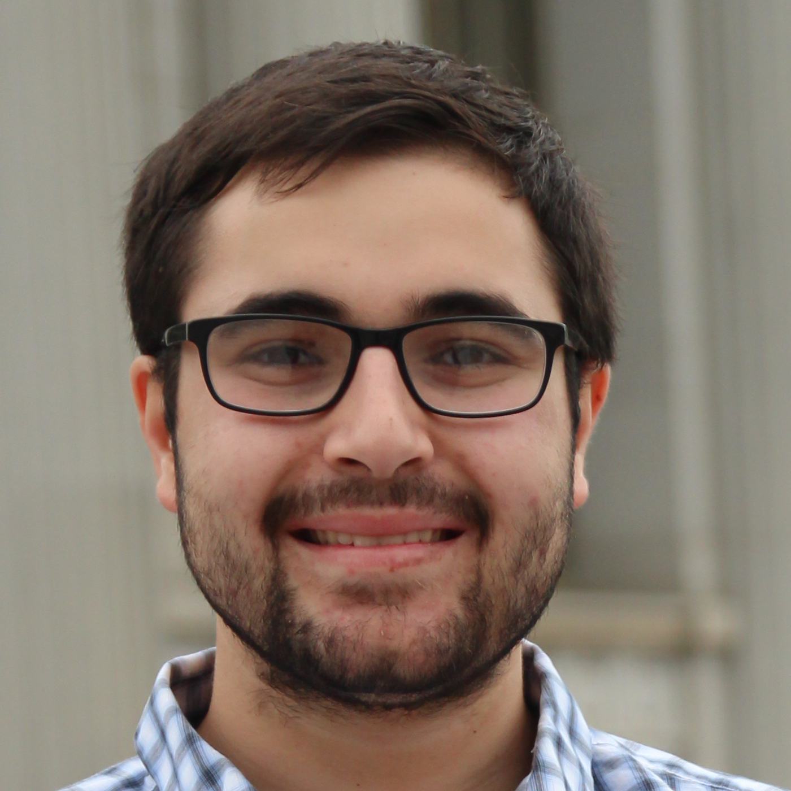
Amir Shahatit (bio) 2nd year CS major from SoCal. Loves ice cream, reggaeton and shawarma. Always down for song recommendations and D8a questions:)
ashahatit@berkeley.edu
Lab: W 6pm-8pm, Evans B6
OH: TBD
|
 Andrew Linxie (bio) Andrew is a junior majoring in computer science and statistics. While he isn't studying, he enjoys dogspotting, eating gummy bears and selling EthiCAL Apparel clothing (Peep his sweater). He hopes you all enjoy this course and find beauty in data like he does!
alinxie@berkeley.edu
Lab: W 4pm-6pm, Evans 458
OH: TBD
|
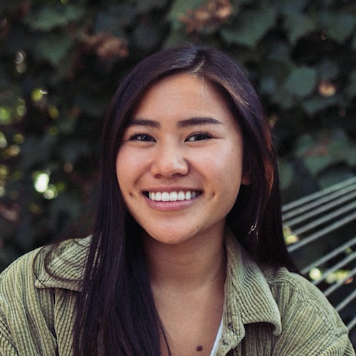
Vien-An Nguyen (Annie) (bio) Annie is a Computer Science major from the Bay Area, more specifically Pleasanton, California. When she's not busy with school or Data 8, she's at a concert shooting her favorite artists: The xx, Phoenix, The Cold War Kids, and others. Coder by day and music photographer by night, Annie's interest are varied. Among them are cats, Spotify Discover Weekly, scuba diving, ceramics, and gelato (not in that order).
vienannguyen@berkeley.edu
Lab: Th 1pm-3pm, Evans B6
OH: TBD
|
 Austen Zhu (bio) Austen enjoys teaching. He too enjoys knowing more about his GSIs. However, he is uncomfortable with writing about himself in the third person.
austenzhu@berkeley.edu
Lab: W 6pm-8pm, Cory 105
OH: TBD
|
 Avery Yip (bio) Avery is currently a sophomore studying computer science and data science. In the past year, he traveled to over 10 countries and one of which included working in India. Through Data 8, he was able to confirm that the disappearance of his summer internship money wasn't due to random chance but by crippling student debt and expensive travels.
averyyip@berkeley.edu
Lab: Th 9am-11am, Evans 458
OH: TBD
|
 Claire Zhang (bio) Claire is a second year from Fremont, CA studying English and taking data science-related courses. Having tutored in the past, she is excited to bring her passion for education to the Data 8 staff for a new semester. Claire spends much of her outside time drawing and nursing her taiko-induced blisters. She looks forward to meeting everyone!
clairezhang@berkeley.edu
Lab: Th 9am-11am, Cory 105
OH: TBD
|
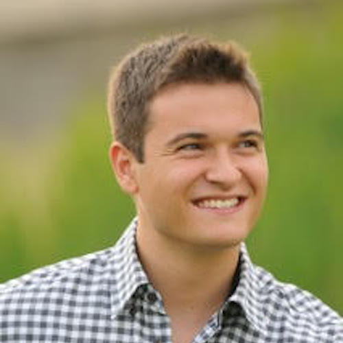
Dominic Croce (bio) Dominic is a third year studying mechanical engineering. He hails from Park City, Utah, so he has an affinity for the outdoors, especially hiking and skiing. In his spare time, Dominic likes cooking, watching basketball (Go Jazz) and playing chess. He loves being on Data 8 staff and is excited to get to know you all this semester!
dcroce@berkeley.edu
Lab: Th 5pm-7pm, Cory 105
OH: TBD
|
 Emily Chang (bio) Emily is a third year computer science major from the San Gabriel Valley. In her free time, she enjoys eating, reading, and swimming. You can probably find her at coffee shops or gawking at puppies around campus!
echang7@berkeley.edu
Lab: W 6pm-8pm, SDH 254
OH: TBD
|
 Emma Jaeger (bio) Emma is a sophomore studying computer science here at Berkeley. She's originally from Ashburn, Virginia, but has lived in Turkey, Austria, and Greece in the past. In her free time, Emma enjoys practicing gymnastics with the Cal Gymnastics Club, photography, and going to concerts.
emmajaeger@berkeley.edu
Lab: Th 11am-1am, Evans 458
OH: TBD
|
 Erik Cheng (bio) Erik is a 4th year in the College of Chemistry with a major in Chemistry. His research interests lie in materials and physical chemistry. In his spare time, he is an avid pebble wrestler, cuber, and occasional PC gamer. However, Erik believes there is no greater joy than a giant bowl of curry and a good night's sleep.
chenge@berkeley.edu
Lab: Th 5pm-7pm, Evans B6
OH: TBD
|
 Fahad Kamran
fhdkmrn@berkeley.edu
Lab: Th 1pm-3pm, Evans 458
OH: TBD
|
|
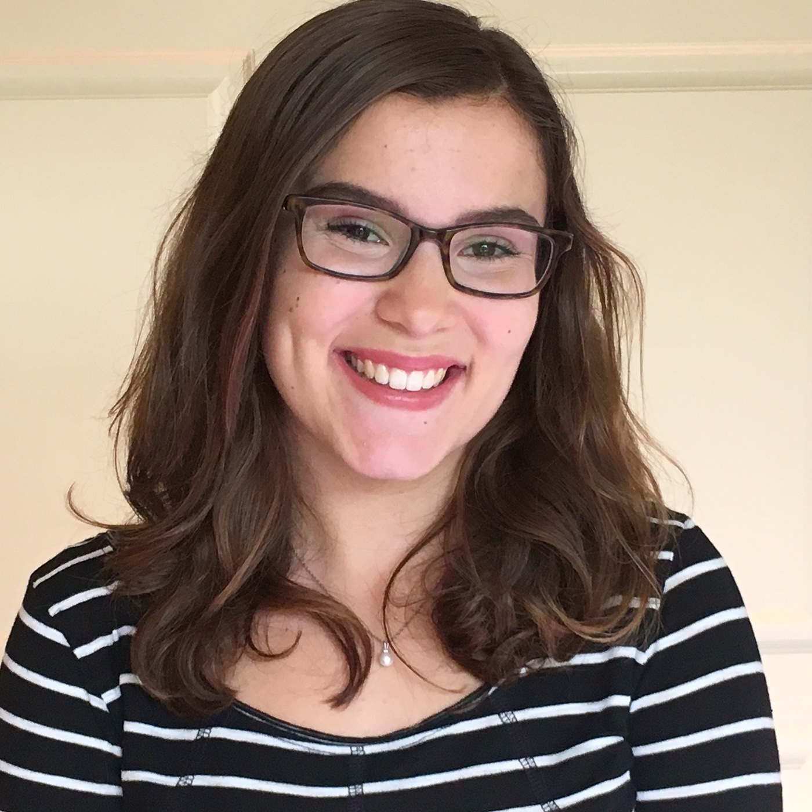
Frances McQuarrie (Francie) (bio) Francie is a second year from San Louis Obispo area studying statistics, computer science, and data science. She loves big dogs, long books, puns, and being outside. She loves Data8 and hopes you will too!
fmcquarrie3@berkeley.edu
Lab: W 6pm-8pm, Evans 458
OH: TBD
|
 Harikaran Subbaraj (Hari) (bio) Hari is a 2nd year EECS student doing research in systems for machine learning at the RISE lab. He is a huge Warriors fan and an avid comic reader. In his free time, Hari enjoys reading (high fantasy and science fiction), debating with strangers on reddit, and taking long naps.
hsubbaraj@berkeley.edu
Lab: Th 11am-1am, Evans B6
OH: TBD
|
 Howard Ki (bio) Howard loves teaching Data 8, and is excited to meet all of you this semester!
howardki888@berkeley.edu
Lab: Th 3pm-5pm, SDH 254
OH: TBD
|
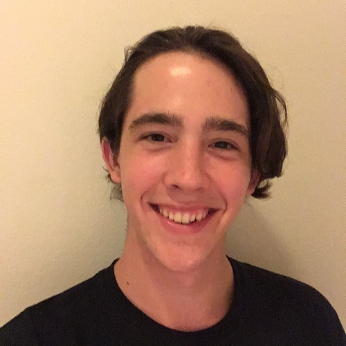
Jacob Warnagieris (bio) Jacob is a second year from SoCal, and is studying computer science and statistics. He took Data 8 in his first semester at Berkeley, and has been involved with the course since. Aside from academics, Jacob enjoys rock climbing, listening to (almost) all kinds of music, and referring to himself in the third person.
jwarnagieris@berkeley.edu
Lab: Th 3pm-5pm, Evans 458
OH: TBD
|
 Jessica Hu (bio) Jessica is a third-year student who originally hails from the cold tundra of the Midwest (Chicago suburbs). This will be her second semester as a UGSI and her fourth semester on Data 8 staff. In her spare time she enjoys playing tennis and badminton, cooking, reading, and browsing the meme page. Last but not least, Jessica is looking forward to a great semester with Data 8!
j.hu@berkeley.edu
Lab: Th 11am-1am, Cory 105
OH: TBD
|
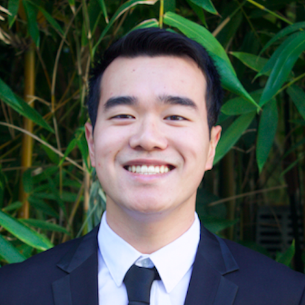
Jiayi Huang (bio) Jiayi is a third-year Cal bear studying Statistics and Economics. He enjoys singing, playing tennis, and of course, data science. He is very excited to work with all of you!
huangjiayi0922@berkeley.edu
Lab: Th 1pm-3pm, Cory 105
OH: TBD
|
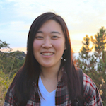
Madeline Wu (Maddy) (bio) Maddy is a senior studying Computer Science. This is her 5th (and last) semester TA-ing for Data 8. Aside from teaching, she enjoys fruit, concerts, photography, and anything from BBC Earth.
wumadeline@berkeley.edu
Lab: W 2pm-4pm, Cory 105
OH: TBD
|
 Michelle Yang
michelleyang@berkeley.edu
Lab: W 2pm-4pm, Evans B6
OH: TBD
|
 Nanxi Wang (bio) Nanxi is a third year computer science major who loves animals, cooking, sleeping, and a good movie. In her free time she likes to design things, play badminton, and dance!
nwang97@berkeley.edu
Lab: W 12pm-2pm, Cory 105
OH: TBD
|
 Natalia Mushegian (bio) Natalia is a Molecular Environmental Biology major planning on minoring in Data Science. She's also in a community ecology lab and involved in the sustainability community at Cal. Feel free to ask her anything about ecology, CNR, field research, and the like, and about how doing data science has helped her with all of this (seriously email nataliam@berkeley.edu)!
namushegian@berkeley.edu
Lab: Th 3pm-5pm, Evans B6
OH: TBD
|
 Niraj Rao (bio) Niraj thinks Data Science is pretty cool and has been involved with the course staff for 3 semesters! In his free time, he likes to order the same dish from Racha Cafe every time he goes, cheer for both the Wizards and the Blazers (which gets confusing when they play each other), and listen to the same song on repeat for a full day.
niraj.a.rao@berkeley.edu
Lab: Th 1pm-3pm, SDH 254
OH: TBD
|
 Nishant Kheterpal (bio) Nishant is a third-year EECS major who spends most of his time in Sutardja Dai Hall studying and doing autonomous vehicle research. Every so often, he goes home to cook, bake, read books (sci-fi and fantasy, usually), and freak out over sports cars. Say hi and feel free to chat about any of this stuff if you see him!
nskh@berkeley.edu
Lab: W 12pm-2pm, Evans 458
OH: TBD
|
|
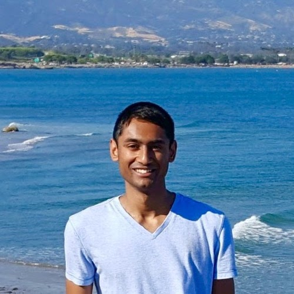
Ravi Singhal (bio) Ravi is a sophomore intending to major in Data Science. He loves sports and is a passionate basketball fan. This is his second semester being a uGSI for Data 8 and he is super excited to be a part of this amazing class again!
ravi.singhal@berkeley.edu
Lab: F 8am-10am, Evans B6
OH: TBD
|
 Rohan Narain (bio) Rohan is a 2nd year studying Statistics and Data Science. When not busy with school or a project, he can be found reading baseball trade rumors (go Giants!), listening to music, or petting every dog he sees.
narain.rohan@berkeley.edu
Lab: W 2pm-4pm, Evans B6
OH: TBD
|
 Ronald Walker (Ronnie)
ronald.walker@berkeley.edu
Lab: F 8am-10am, Evans 458
OH: TBD
|
 Ruta Joshi (bio) Ruta is a Data8 TA, CS major, and Harry Potter fan who researches robots and AI while listening to great EDM music. She likes reading fiction, making Spotify playlists, and teaching data science. She's super involved with the Data Scholars program and you should ask her many questions.
rjoshi@berkeley.edu
OH: TBD
|
|
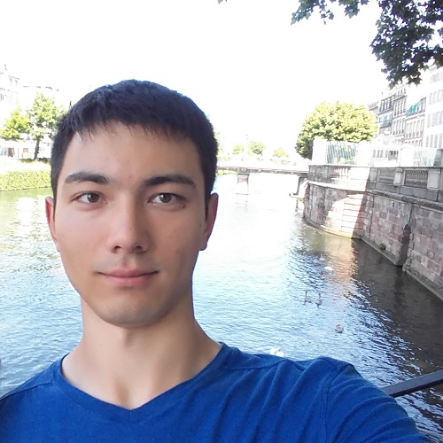
Ryan Roggenkemper
rroggenkemper@berkeley.edu
Lab: F 8am-10am, Cory 105
OH: TBD
|
 Sahil Upadhyay
supadhyay@berkeley.edu
Lab: W 2pm-4pm, Evans 458
OH: TBD
|
 Scott Lee (bio) Scott likes turtles. He also consumes almost as much tea as he does music. When not catching up on CS or stats homework, he can be found sleeping (a lot), eating all sorts of noodles, or making his next mix.
scott.lee.3898@berkeley.edu
Lab: W 12pm-2pm, SDH 254
OH: TBD
|
 Subhiksha Mani (Sue) (bio) Sue is a junior, studying cognitive and computer science with an interest in data science, machine learning, neuroscience, and teaching! You can catch her listening to music and obsessing over dinosaurs. As a kid, she wanted to become a paleontologist, but later found digging through data more exciting than digging for fossils. Welcome to Data 8, and can't wait to meet you all!
s.mani@berkeley.edu
Lab: W 12pm-2pm, Evans B6
OH: TBD
|
|
Tanay Nathan (bio) Tanay is a senior studying computer science. Within the field itself, he has a passion for data infrastructure and enjoys learning about various big data systems. Outside of the classroom, he is a fan of basketball, baseball, and football and enjoys listening to music and watching musicals and plays.
tanaynathan18@berkeley.edu
Lab: Th 3pm-5pm, Cory 105
OH: TBD
|
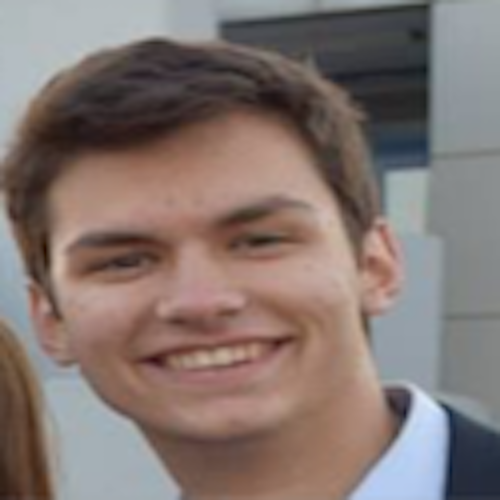
Vasilis Oikonomou
v.oikonomou@berkeley.edu
Lab: Th 9am-11am, Evans B6
OH: TBD
|
 Vinitra Swamy (bio) Vinitra is a Master's in EECS student at UC Berkeley. She did her undergrad here in Computer Science as well, graduating a few years early and spending most of her time drinking many different flavors of boba and working with the emerging Data Science program at Berkeley (BIDS, Jupyter, DSEP, Data Science Division). Her research is in (you guessed it!) data science, specifically AI and ML for Education, and this is her 4th semester as a GSI for this course.
vinitra@berkeley.edu
OH: TBD
|
 John Weston Hughes (Weston) (bio) Weston is a 3rd year undergrad doing research in deep learning and genomics. When not playing with his computer, he teaches SCUBA diving in exotic places and plays with cats.
jwhughes@berkeley.edu
Lab: Th 5pm-7pm, Evans 458
OH: TBD
|
Tutors¶
|
Adele Bloch (bio) Adele Bloch is a sophomore at UC Berkeley who intends to double major in Business and Data Science. Adele first began to love Data Science after taking Data 8 her freshman year, and now she is entering her second semester as a Data 8 tutor. After graduating, Adele wants to combine her knowledge of business and data science to start a company founded on data-driven techniques.
adele.bloch@berkeley.edu
|
Aditya Goel (bio) Aditya is a third year international student from Mumbai, India. He is majoring in Molecular and Cell Biology and is minoring in Bioengineering. In his free time, he likes to do photography, play ultimate frisbee, and binge TV shows.
adityagoel@berkeley.edu
|
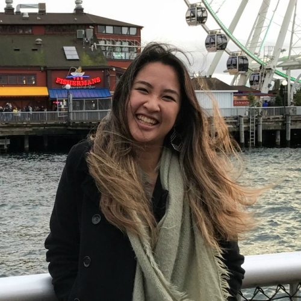
Anna Nguyen (bio) Anna is a sophomore majoring in Public Health and Data Science. She is interested in the intersection between technology and healthcare, and is excited to see the change that Big Data is bringing to fields like epidemiology and health policy. In her free time, Anna likes to go on beach hikes, make Spotify playlists, and search for the best boba shop in the Bay Area.
anna-nguyen@berkeley.edu
|
 Carlos Eduardo Ortega (bio) Carlos is a second-year student hoping to major in Data Science and minor in CS. He enjoys stats, binge watching sitcoms, and short walks on Sproul. Carlos is very uncomfortable referring to himself in the third-person.
carlosortega@berkeley.edu
|
|
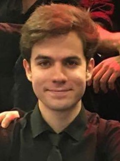
Colby Lewis V (bio) Colby, from Near-Chicago-Illinoise, is enthralled to be apart of Berkeley’s diverse data science community. Besides the direct skills of DataScience and CS Colby study’s and plays the violin.
colbylewis2020@berkeley.edu
|
Derek Tang (bio) Derek is a second year student studying computer science and statistics. Coming from Georgia, he has sworn off all Pepsi products, thinks country music is pretty good, has never missed a college gameday, and considers Waffle House a four-star establishment. His interests include nature (space, especially, is tight), hip-hop, gambling, sports, and gambling on sports.
derektang@berkeley.edu
|
 Divyesh Chotai
dchotai@berkeley.edu
|
 Jade Yen
jadeyen@berkeley.edu
|
 Katie Chan
katie@berkeley.edu
|
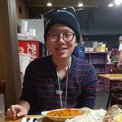
Kijung Kim
kijung@berkeley.edu
|
 Krista Hayakawa (bio) Krista is a second year student and two time Data 8 tutor. She enjoys being on the Cal Cheerleading Team and fundraising for St. Jude Children's Research Hospital.
keh7@berkeley.edu
|
 Lillian Louie (bio) Lillian is a sophomore who enjoys watching asian dramas (Korean, Chinese, Japanese, etc.). She loves milk tea and is always down for a boba run. It’s her first time as a course staff and she is excited to make a lot of new friends!
lillianlouie@berkeley.edu
|
 Lloyd Tripp (bio) Ask Lloyd about the intersection between biological systems and statistical analysis. Current interests include molecular and genetic engineering, information theory, and fermentation projects. Feel free to ask any question but expect to have a conversation to master Data 8 material.
lloydt@berkeley.edu
|
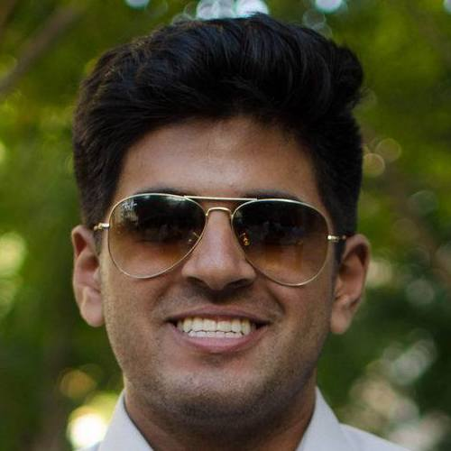
Lovish Mujral (bio) Lovish is a second-year Computer Science Major. He is from the Bay Area and loves to play basketball and watch the Lakers in his free time. He also loves music, especially Hip-Hop/Rap.
lovishmujral@berkeley.edu
|
 Makena Schwinn (bio) Makena is a second-year majoring in Computer Science. In her rare free time, she can be found outside running or hiking, trying new restaurants, playing with her cats, or going out with friends. Her career interests range from IoT to sustainable infrastructure to finance, all with a focus on data science, of course!
makenaschwinn@berkeley.edu
|
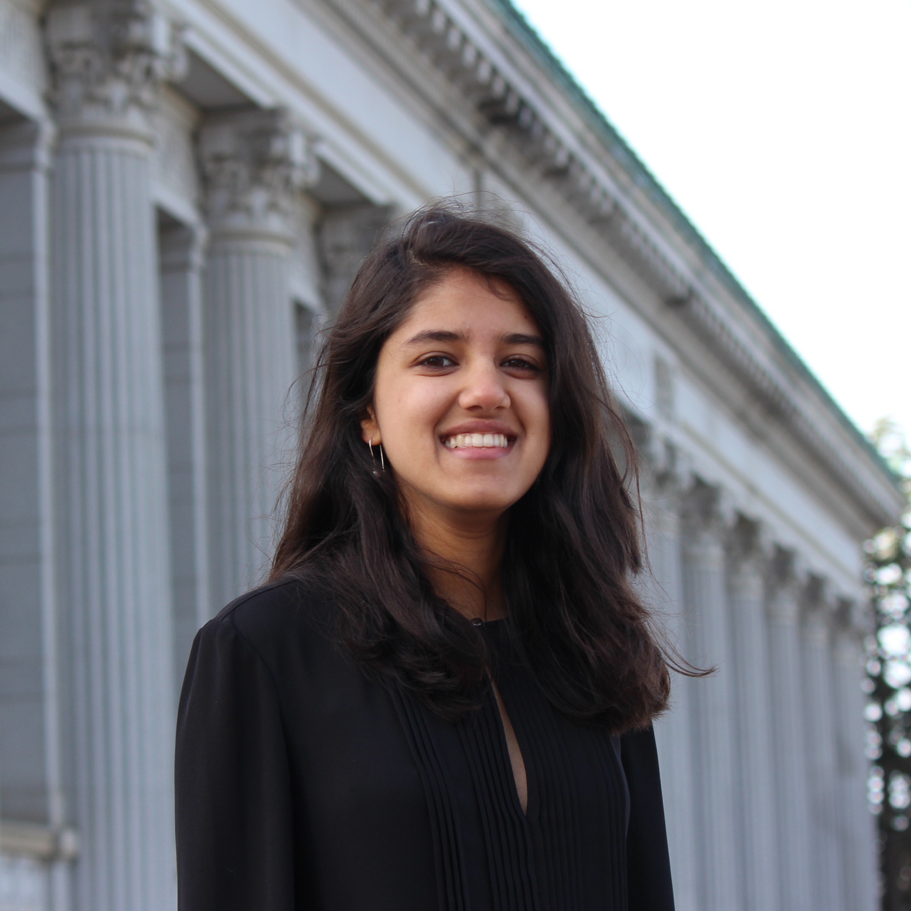
Maya Rao (bio) Maya Rao is a second-year student at the University of California, Berkeley, majoring in Political Economy with a concentration in Technology & Globalization and minoring in Data Science and Russian Language, Literature and Culture. On campus, Maya is involved with the Daily Californian's sports department and professional foreign service fraternity Delta Phi Epsilon, and last summer, she interned in San Francisco with leading Internet-of-Things media site ReadWrite. In her free time, Maya enjoys reading novels on the glade, watching musicals in the city with friends, and talking about her love of San Diego, her hometown. Maya was a lab assistant for Data 8 in Fall 2017, and is excited to be further involved with the course this semester!
mayarao@berkeley.edu
|
 Maya Shen
mayashen@berkeley.edu
|
 Oscar Syu
oscar.syu@berkeley.edu
|
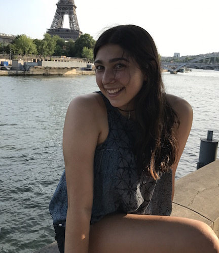
Rebecca Woolf
rwoolf@berkeley.edu
|
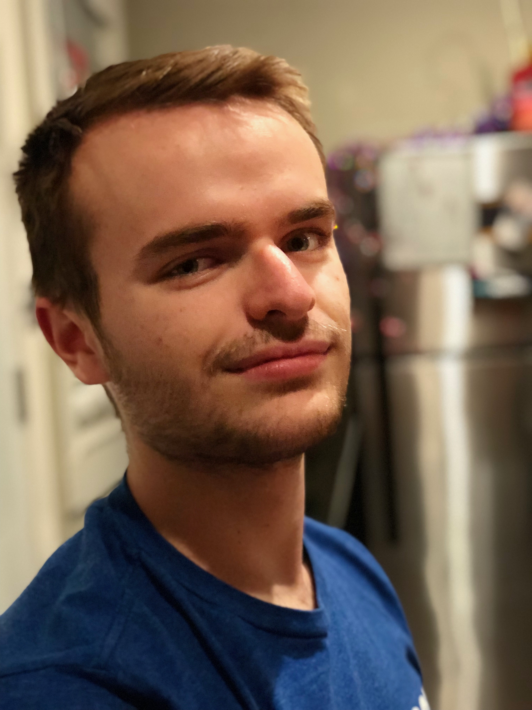
Robert Sweeney Blanco (bio) Robert is a sophomore from Pasadena, California studying mathematics and data science. He is a team lead for DSEP, so he is a great person to talk to if you are interested in getting involved with developing connector courses. In his free time he enjoys watching sports and fighting for California.
roberts97@berkeley.edu
|
 Sabrina Liu (bio) Sabrina is a third year studying Economics, Statistics, and Music. She is a huge Steelers fan and likes to play uncommon instruments. One of Sabrina’s biggest aspirations in life is to figure out every way to cook potatoes.
liusabrina@berkeley.edu
|
 Sasank Chaganty (bio) Junior (3rd year), majoring in Statistics and Economics, part of the DSEP Modules Team. In his free time, he likes to play tennis and badminton, explore the Bay Area, and listen to music. His favorite course: Data8!
schaganty@berkeley.edu
|
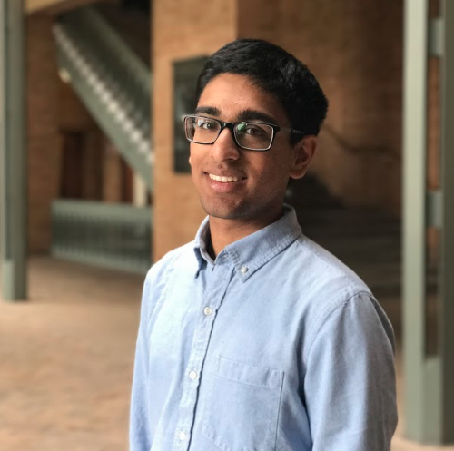
Sathvik Nair (bio) Sathvik is a second year from San Jose studying CogSci and CS. In addition to data science, he's interested in web development and technology's role in society. In his free time, he enjoys playing the violin and Indian percussion, cooking, and fawning over maps. Sathvik is excited to share his amazement with the power of data science this semester!
sathviknair@berkeley.edu
|
 Sidney Hoang Le (bio) Sidney is a fourth-year Statistics student devoted to inclusion and accessibility in data science. In his rare moments of free time, he enjoys enjoying art, eating fried chicken, watching movies, and hanging out with dogs. Feel free to approach him about any issues relating to: data science, statistics, sociology, looking cool.
sidney.h.le@berkeley.edu
|
|
Yash Ashish Sanghrajka
yashcal@berkeley.edu
|